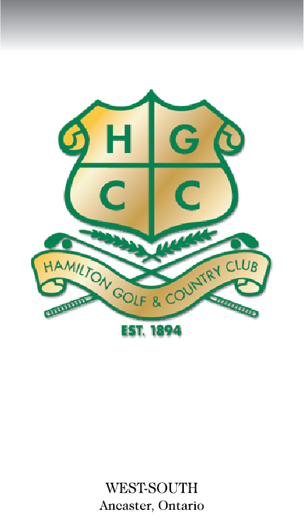

Hamilton Golf and Country Club
Yardage Book

Project Type
Personal Project
Time
4 Months
Role
Project Designer
Product
The goal for this product was to provide the members of Hamilton Golf and Country Club a yardage book to give precice yardages from any point on any hole and give a detailed topography map for each green to assist users in reading greens and seeing how greens will react to approach shots. The overaching goal with the design was to add as much information to assist the user while keeping a simple and minimalist design as possible.
Context
The reason why I went about making this is because Hamilton Golf and Country Club does not currently have a yardage book. Without a rangefinder, some golfers (including me) do not have a rangefinder, and thus is not able to get accuate yardages. This will allow users to get a yardage to the pin as well as povide a detailed view of the hole as well as the green topography.
Design Process
Research
The first step that I took to this project is conduct research in order to see what the average user of a yardage book wants. The next step from there was to research what are the features in a yardage book and see what the typical yardage book includes. From there, I was able to create a few rough sketches and share it with some industry professionals to get their opinion on how I could improve my design.
Idea and Design
After gathering feedback from industry professionals, I then came up with my final sketches. From there, my next step was to hop into illustrator and photoshop to create a good copy of the actual product.
Revise
Next, I shared my good copy with my industry professionals to get further feedback. From there, I was able to
Finish
After inplimenting all of my groups ideas, I was able to finish my full prototype. From there, I used native tools within Adobe XD to incorporate it into our overall pitch.
Design
As the objective of this app was a mental health app, the goal was to make the users feel welcome. Thus, I decided that the primary colour for this app UI would be blue, as it is the most welcoming and calm colour. From there, our group wanted to stess what the purpose of the app was, thus, we went with the message icon as our logo with the + in the middle to give the logo a little more of a customized feel. Lastly, for the fonts, I ended up choosing _____ since this potrayed the calm feeling of the app.

High-Fidelity Design
Splash Screen
The splash screen design is relatively simple. The main goal for this screen is to welcome the users of the app. The reason that we went with the blue colour is to make the users feel welcome, as blue is a welcoming colour.
Login/Signup Screen
The goal of the signup/login screen was to make the experience for the user to make an account/login to be as seamless as possible. One way that this is implimented is with the various ways that you can login/signup into the app.
Home Screen
The design of the home page was intended to make the user access the various features of the app as quickly as possible. The background images add context to each of the images in case it was not clear enough.

Settings
The Settings page was intended to help the user change the app in order to make the experience as personal as possible. Thus, there are multiple features that can be changed in order to achieve this.